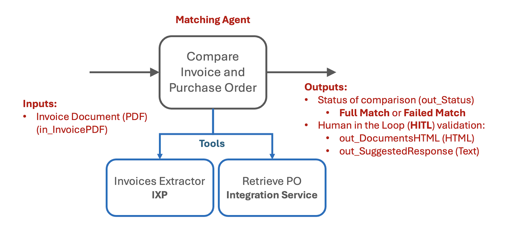
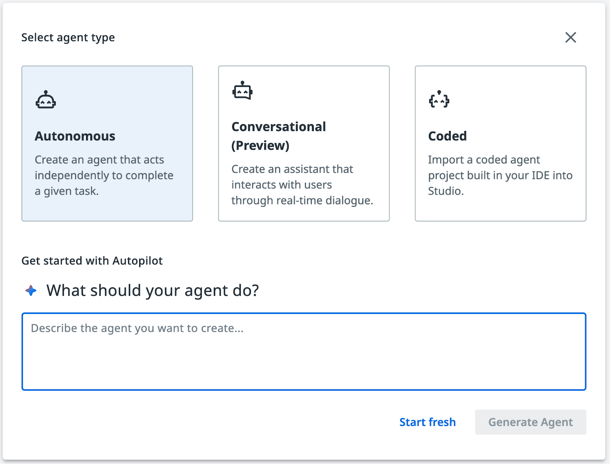
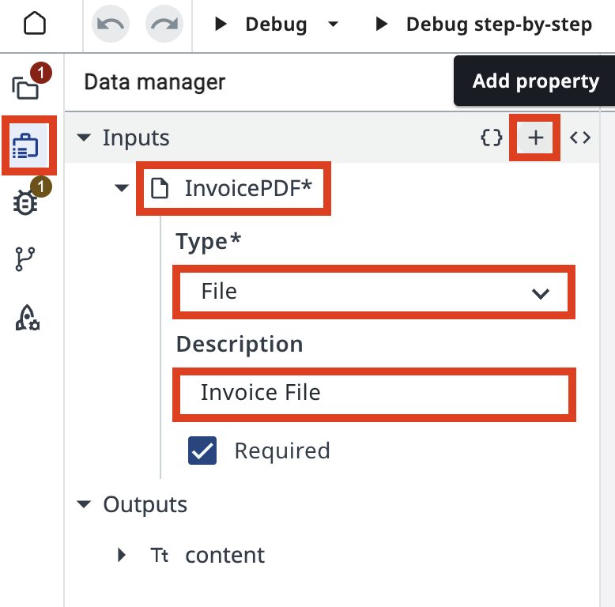
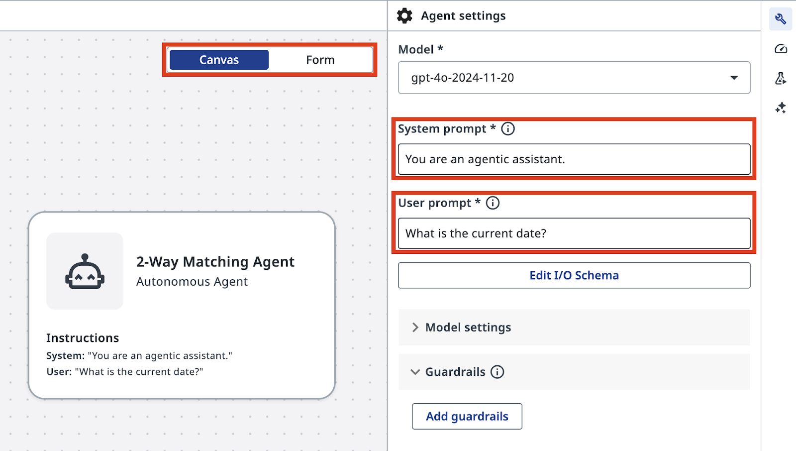
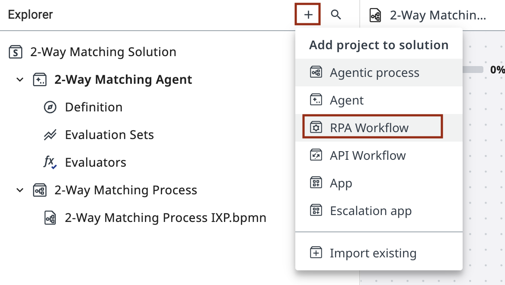
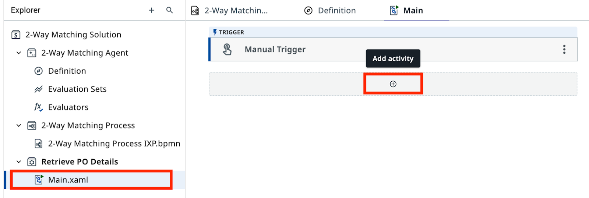
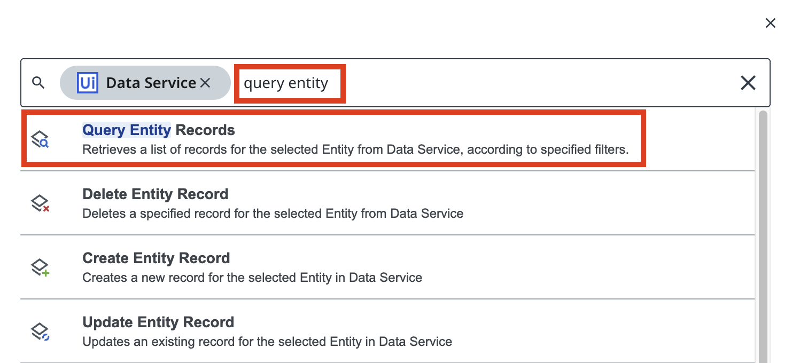
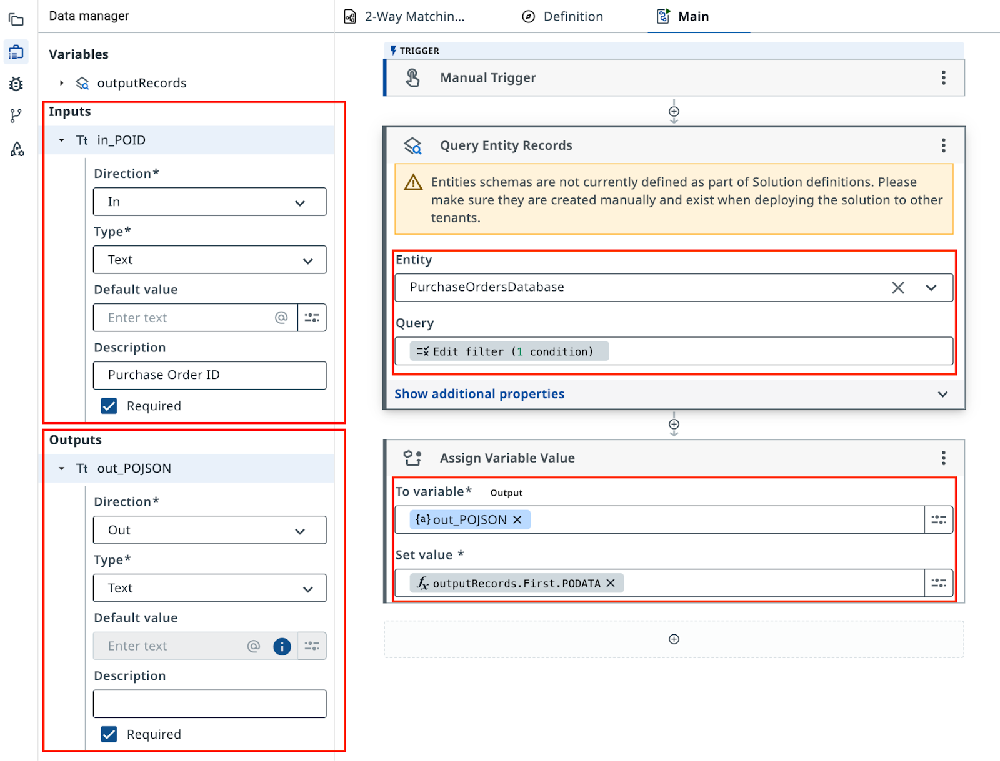
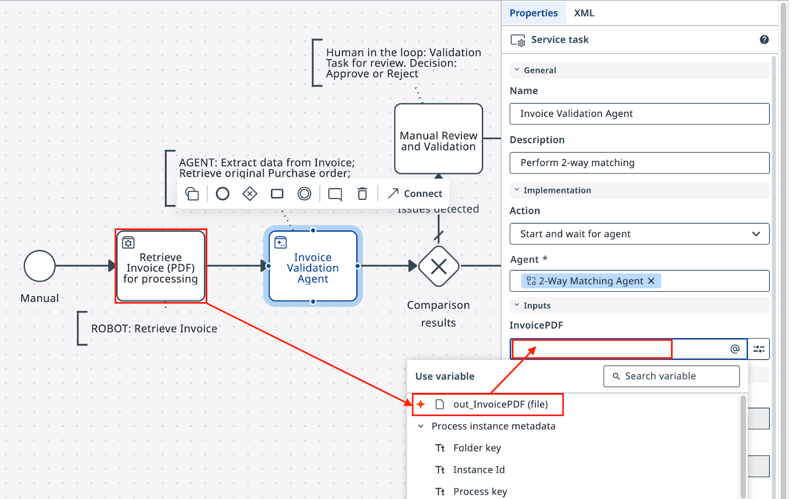
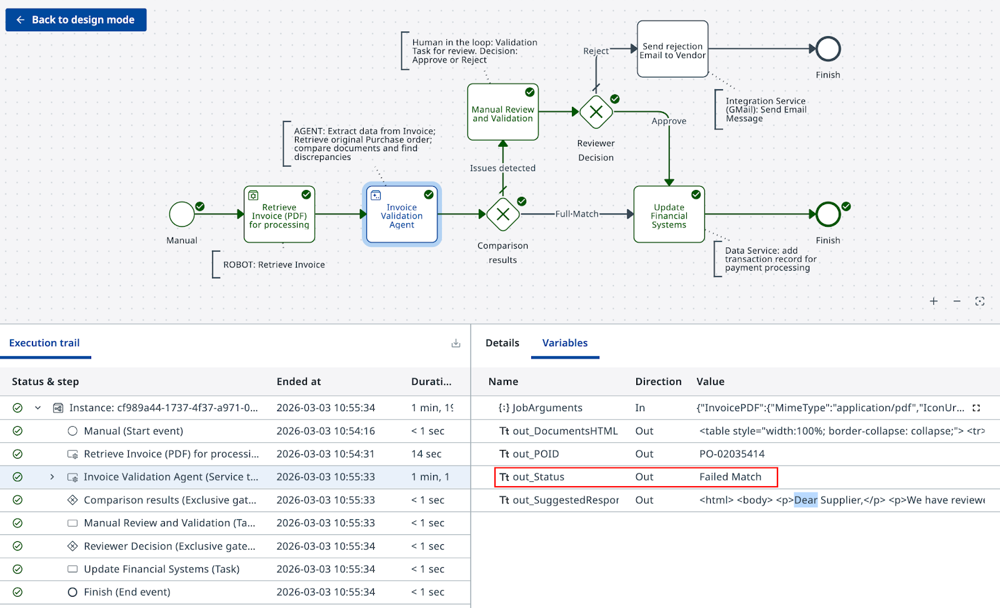

Build an Agent and add it to workflow¶
Here is our plan for this lesson:
-
Build the 2-Way Matching AI Agent from scratch in Studio Web.
- The agent will use Robot's JSON outputs as inputs, and output the validation result.
- If there is a problem with the invoice, the agent will also prepare data for the human validation task.
-
Configure testing and build an evaluations dataset to ensure quality of the Agent (optional).
-
Configure the Agent in the Maestro workflow.
-
Configure Maestro Gateway based on Agent's outputs.
-
Simulate to see if the decision goes the right direction.
Goal¶
Create the 2-Way Matching Agent with two tools: an IXP data extraction tool and an RPA workflow tool that queries the Purchase Order database. The agent receives a PDF invoice, extracts structured data, looks up the corresponding PO, and returns a matching decision with supporting outputs.
Why Use an LLM for Matching¶
The next step in our process is to compare Purchase Order and Invoice.
You can write traditional code that would compare and analyze invoice data and line items, but it might be fairly challenging, since "rules" are usually flexible — for example, tables might include lines with semantically similar but not identical descriptions, or there may be some other acceptable variations. This increases code complexity and implementation time for every such edge case.
Also, if discrepancies are detected, the usual next step is to write to the sender and request to update the invoice.
LLMs are ideal for this job — they can analyze large amounts of text in any format, identify discrepancies and exceptions, then follow the instructions in prompts to generate a validation summary or email response in the required format and language.
Let's use Studio to create our "2-Way Matching Agent"!
Steps¶
Part 1: Create the agent and configure arguments¶
-
In Studio Web, add a new Agent to your solution. Remember that Solutions can have multiple components such as apps, automations, workflows and agents. Name it 2-Way Matching Agent.

Dismiss the Autopilot screen when you see the prompt to generate a new agent. Feel free to play with Autopilot later, but here you'll configure prompts and settings manually — click Start fresh.
-
Open Data Manager from the left ribbon and add a new Input argument:
Field Value Name InvoicePDFType File Description Invoice File 
-
For Output arguments, switch to editor mode.

-
Paste the following JSON into the editor:
{ "type": "object", "required": ["out_Status"], "properties": { "out_Status": { "type": "string", "description": "Status of matching - either 'Full Match' or 'Failed Match'" }, "out_DocumentsHTML": { "type": "string", "description": "HTML code containing side by side comparison of Purchase Order and Invoice" }, "out_SuggestedResponse": { "type": "string", "description": "Suggested response to Invoice Supplier with description and request to mitigate issues" }, "out_POID": { "type": "string", "description": "Purchase Order ID extracted from Invoice PDF" } }, "title": "Outputs" }
-
Confirm all four output arguments are configured correctly.

Part 2: Configure the prompts¶
System prompt is like human's work instructions. Let's start with something like this:
"Precision in prompts, like in coding, leads to powerful and predictable results. If your prompt is messy, expect messy output. Treat it like code, and write every word with purpose!" — another advice from gpt-4o
-
Enter the following User Prompt:

-
Enter the following System Prompt:
You are an AI agent specialized in comparing Invoice PDFs with Purchase Orders. Your primary responsibilities are: 1. Analyze the contents of an Invoice PDF file using the InvoicesIXP tool. Extract all relevant information including company details, line items, totals, and tax information. Trigger Escalation if confidence falls beyond 60%. 2. Use the Retrieve PO Data tool to fetch Purchase Order data from the Data Fabric. The Purchase Order ID should be extracted from the Invoice. If the PO data cannot be retrieved, use Escalation. 3. Compare the Invoice details with the Purchase Order information. Identify and list any mismatches or discrepancies between the two documents. Pay special attention to: - Company names and details - Line items (product names, quantities, prices) - Totals and subtotals - Tax information - Dates (order date, delivery date, payment due date) 4. Handle any unexpected data formats or missing information gracefully. If crucial information is missing from either document, note this in your analysis and use Escalation. 5. Provide a clear, concise report of your findings, highlighting any issues that require attention. You should be thorough in your analysis, checking for discrepancies in items, quantities, prices, dates, and any other relevant fields. Always maintain a professional and objective tone in your reports. out_Status: Status of comparison should be: - "Full Match" - if Invoice and Purchase order match fully. Every line item in PO matched to Invoice line items, company name and details match, total and tax information matches. - "Failed Match" - if there are items that cannot be matched or other details do not align. out_DocumentsHTML: If match is not successful, generate HTML code containing side by side comparison of Purchase Order and Invoice, including Company details, document Line Items, Total and Tax information. - Use a table structure with three columns: Field, Purchase Order, Invoice. - Field titles should be placed in the leftmost column. - Tax value should include tax rate and tax name, if available. - Line items should be displayed as sub-tables inside the main table cell, aligned top. - Cells with discrepancies should have a light red background, both in the main table and in cells of line items sub-tables. - Set the table width property to 100%. - Use appropriate HTML tags for headers, rows, and data cells. out_SuggestedResponse: If match is not successful, draft the invoice rejection email to the supplier. - The email should have HTML formatting. - Start with "Dear Supplier" and do not include a Subject line or placeholders. Sign the email as "Payments Team". - Display product names, prices, and other data from documents in bold text. - Include a bullet list with reasons for rejection, i.e., discrepancies that can't be matched, and a request to adjust the invoice and resend. - In the bullet list, do not include items if that individual item is considered a match. Only list items that do not follow the rules. - Maintain a professional and courteous tone throughout the email. Always double-check your analysis and outputs for accuracy before finalizing your response.
Part 3: Add the IXP tool¶
Next, our agent will need tools that we mentioned in the system prompt:
- InvoicesIXP tool — uses the existing Invoice IXP project for data extraction
-
Retrieve PO Data tool — looks up Purchase Order details using the extracted PO ID
-
In canvas mode, select your agent and add a new Tool.

-
Select IXP from the toolbox and choose the InvoicesIXP project.

-
Add a meaningful description, for example: Invoice Data extraction tool.

It's an out-of-the-box Invoice extraction model with standard taxonomy. You will not be able to see the tool configuration. It will return a JSON object containing extraction data. That's it!
-
Save the IXP tool configuration.

Part 4: Build and add the PO lookup tool¶
Next, let's build the Retrieve PO Data tool as a new RPA workflow. PO data is stored in Data Fabric and we can look up records using POID.
-
Add a new RPA workflow to your solution. Give it a meaningful name, like always.

-
Configure the input and output variables for the workflow. Return the PODATA field from the entity.

-
Add a Query Entity Records activity configured to query the PurchaseOrdersDatabase entity. Apply the filter: POID equals in_POID.

-
Back in your agent's canvas, add this RPA workflow as a tool.

-
Configure the input hint for the in_POID argument so the agent knows the expected format:

Usually you would need to retrieve PO from a more complex environment like SAP or NetSuite, and also handle exceptions. But in this case you got away really easy — well done! ;)
Part 5: Test the agent¶
-
Test the agent with a sample PDF invoice. Confirm the agent calls the IXP tool first.

-
Review the IXP extraction results and verify the agent identified the PO ID correctly.

-
Confirm the agent called the PO lookup tool with the extracted PO ID.

-
Review the final output. Verify
out_Status,out_DocumentsHTML,out_SuggestedResponse, andout_POIDare all populated.

Investigate carefully — there are no errors here. It's just that the Vendor sent an Invoice that is differently formatted, and some descriptions are not identical but very similar. The Agent will only follow our specific instructions in the Prompt, and the current prompt doesn't mention anything about such "similar" items, or the possibility of splitting 1 PO line item into multiple Invoice line items.
As with any automation, our objective with the prompts is to cover as many cases as possible.
Part 6: Connect the agent to Maestro¶
Let's get back to Studio Web and continue editing our Agentic Process.
-
Return to your Maestro Agentic Process and configure the second task. Set the action to Start and wait for agent, then search for the agent in your solution (Defined Resources) and select it.

-
Pick outputs from the previous RPA Task (Retrieve Invoice PDF) and add them as inputs to the Agent — here is how you do it in your Agent Task's Settings:
Robot output Agent input out_FileNameInvoicePDF
Note that Agent's outputs were also automatically added to the workflow, so you can use them right away when configuring the Exclusive Gateway.
-
Let's look at Agent's Status (
out_Status) and direct the process to the next step — either sending the invoice for payment, or towards manual review. Configure the Exclusive Gateway after the agent task.Set the expression for the Full Match path. Note that using
ToLower()makes it a bit more reliable:You can test various expected inputs right in the expression editor. Set Failed Match as the default path.
-
Click Debug and confirm the gateway routes correctly based on the agent's output. This time we want to see execution of the Agent and how Agent's output changes the direction of the execution flow from the default path.

Your agent is ready. However, in most cases you will need to come back multiple times and improve the prompt in order for it to be more flexible — this way users need to perform less manual validation and it will work more reliably.